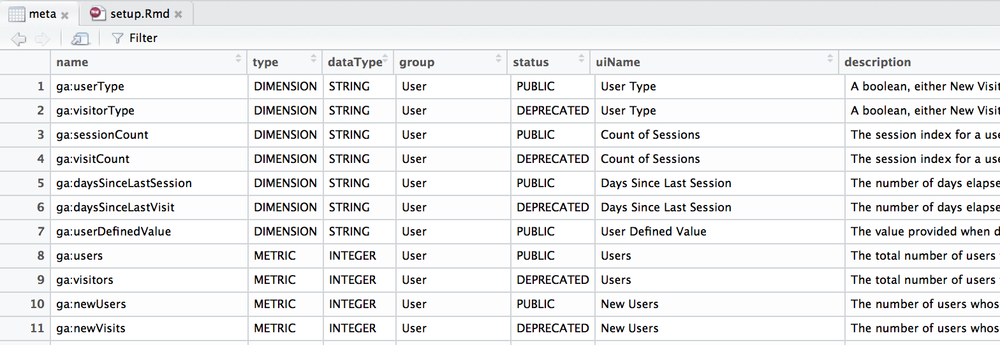

With several hundreds of metrics and dimensions available in GA it can be handy to have a reference of what’s what within easy reach. The ga_meta() function returns a table containing a list of all GA metrics and dimensions along with their definitions and other useful meta data.

If offline, this data is also available by typing meta, although it won’t be quite as up to date.
(The meta data does not include multi-channel as they are not available, for those see the online version. )
In a similar fashion, using the function ga_account_list() summarises all account web properties and views available to your user for a handy reference.
To make the process of working with segments easier, googleAnalyticsR provides several options. These are examined in more detail in the API v4 section Sometimes it is also helpful to create a segment within the UI first and then refer to it by ID when working with the googleAnalyticsR library -especially when some quick experimentation is needed before deciding on the exact segment definition.
Several types of statistical analysis require access to more fine grained data than what’s typically available via the Google Analytics standard version. The release of the user API has removed this constraint, so if you wish to explore a broader range of analysis methods you can now access the Google Analytics equivalent of a clickstream.